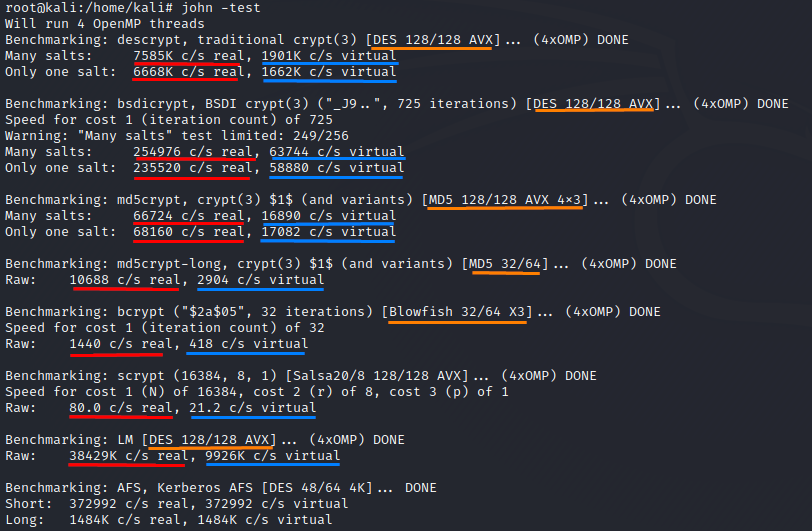

Benchmark
John includes a handy function that measures the speed of a given system in cracking the various password hash routines that John can handle.
When invoked with the
--test option, John can display statistics about how many combinations per second it can perform on a given machine. This option does not need any file passed as argument. Its only function is to benchmark the system john is running on.
Two results are included for each type of password hash:
◇
real value → System with load: is an estimate of c/s for John given the presence of other processes that are vying for CPU time
◇
virtual value → System without load: indicates how John is likely to perform if John can use most of the processing power of the system, without competing with other processes.
